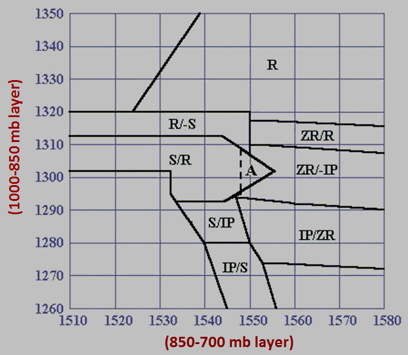

ZHU Training Page archive · Precipitation Nomogram · Source: http://www.weather.gov/source/zhu/ZHU_Training_Page/winter_stuff/precip_nomogram/Nomo_index.html · Captured 2026-08-19 06:00 UTC
Precip Type based on Nomogram
The weather grids produced by this tool indicate where a type of precip is expected
(rain or frozen precip) based on model thickness in the 1000-850mb layer and 850-700 mb layer.
| Nomogram Abbreviation |
Precip Type |
| R |
Rain |
| S (-S) |
Snow (Light Snow, Flurries) |
| IP |
Sleet |
| ZR |
Freezing Rain |
